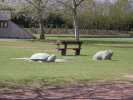
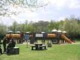
Les enfants ne sont pas oubliés dans ce lieu de loisir...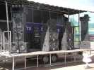
Evidemment, pour le festival, la bande à Fabian a apporté quelques suppléments, dont une discrète sono !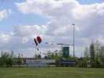
Le samedi, vent très léger et turbulent derrière les collines et les arbres. Les cerfs-volants montent, descendent, remontent... enfin, pas toujours !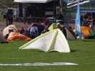
Ce delta est évidemment très léger... même s'il n'est pas gonflé à l'hélium, comme la question a été plusieurs fois posée... Mais il volera très bien.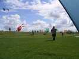
La turbulence amène évidemment de petits accidents, qui pourraient avoir des conséquences graves quand on sait que les réverbères éclairent une route à 4 voies !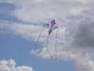
Ce majestueux cerf-volant a un petit air négligé avec ses queues emmêlées. C'est ce qui arrive quand on joue montée-descente : les queues redescendent moins vite que le CV...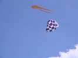
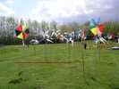
Il y avait bien sûr des JdV, bien que les Mouchague aient été en panne de pompe à eau... Un vrai champ d'éoliennes !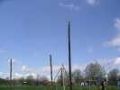
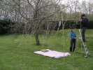
Ce bel ensemble, lit à baldaquin, est dû à un couple que je ne connais pas !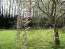
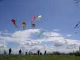
Pour animer l'après-midi, grande levée de pyrodeltas. Jos en a amené plein. Mais ils sont spéciaux, avec un tube souple qui va d'une pointe arrière à l'autre. Hors concours, Jos !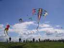
Dans la catégorie des cerfs-volants tressés, celui-ci a demandé beaucoup de travail, mais manque évidemment un peu de vent...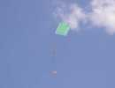
Gérard Rosenblatt a, comme d'habitude, amené des cerfs-volants ultra-légers, gonflables et inhabituels en plastiques translucides et multicolores, assemblés... par couture!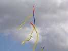
Bel ensemble de très grandes queues. Vous voyez, quand j'ai dit que le vent était turbulent... !.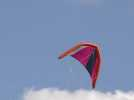
Dans la catégorie "deltas gonflés" (je n'ai pas dit gonflables) celui-ci est... pilotable. Faut quand même pas demander trop de figures...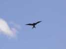
Une petite hirondelle toute noire, un peu triste et discrète, mais bien stable.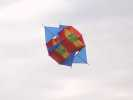
Un flocon classique, déjà vu à plusieurs reprises...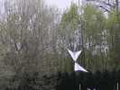
Didier est aussi cervoliste, et quel créateur ! Derrière ses jardins, il fait voler son Papillon monofil pilotable. On en a vu des versions 2 lignes et 4 lignes, mais le monofil me semble encore le plus intéressant !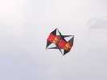
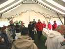
En plus de ses interviews sur France Bleue, Fabian, fait les discours devant les autorités qui le relaieront sans faiblesse... malheureusement. Mais il faut bien remercier...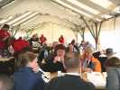
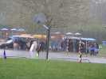
Et des intempéries, il y en a eu. Pas beaucoup, mais une grosse ! Un gros orage noir qui a remonté le vent pour larguer des grêlons gros comme des pois, et pas extra-fins, plutôt... chiches !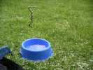
La gamelle de Logos était rafraîchie à souhait !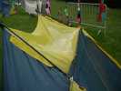
Heureusement, avec ma longue expérience, j'avais tourné la tente juste avant le début des hostilités ce qui m'a permis de regarder tranquillement la grêle tomber et de photographier au sec. Sinon, ce qu'il y a sur le toit aurait été dedans !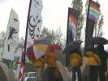
La grêle a cessé, il pleut encore pas mal, mais on peut ressortir, surtout quand on a un beau parapluie...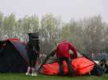
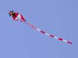
J'ai retrouvé aussi ce très grand diable rouge dont j'avais raté la photo aux rencontres précédentes...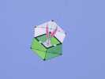
Ce Rokkaku est décoré d'une main sûre...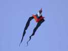
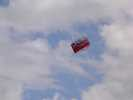
Les anglais étaient présents aussi à Somain, avec leur marque de fabrique...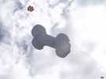
Logos a bien apprécié ce gonflable très réaliste...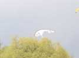
Ce monofil de taille assez modeste est très joli à voir ! Il a seulement aujourd'hui un peu trop de trous pour bien tenir en l'air 8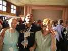
Le samedi soir, il y avait eu un grand repas dans la salle derrière le commissariat, en ville. Surprise, à la sortie, personne ne nous attendait pour souffler dans le ballon !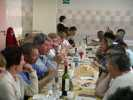
Un beau buffet nous attendait dans cette grande salle où les convives ouest ont le soleil dans l'oeil pendant une demi-heure !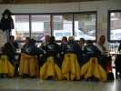
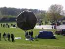
Le dimanche soir, grand beau temps, mais le vent tombait. Un optimiste a sorti son ballon solaire. Mais d'abord son ballon avait une trop grosse fuite à l'arrière et ensuite il restait trop de vent. Et quand il y a du vent, l'air froid rentre, l'air chaud sort et ça monte encore moins !